EXPLORATION
Tanay, Rizal is a premier eco-adventure and cultural destination in the Philippines, renowned for its spectacular cascading waterfalls, and deeply rooted history
WELCOME TO TANAY, RIZAL
Step Into Tanay, Tanay, Rizal is a first-class municipality located about 50 to 57 kilometers east of Manila in the CALABARZON region of the Philippines, We invite you to explore the heritage,serenity, and spirit of our home, Discover the wonder that stays with you.
START YOUR JOURNEYEXPLORATION
Tanay, Rizal is a premier eco-adventure and cultural destination in the Philippines, renowned for its spectacular cascading waterfalls, and deeply rooted history
NATURE
For nature lovers and outdoor enthusiasts, Masungi Georeserve is a must-visit Tanay Philippines tourist spot. This unique and breathtaking conservation area boasts a range of trails.
FESTIVALS
The province of Rizal in the Philippines hosts several vibrant cultural and religious festivals celebrated across its different municipalities and cities.
CULTURE
The vibrant Hane Festival and the historic Saint Ildefonsus of Toledo Parish showcase the rich blend of indigenous Dumagat traditions, Spanish-era heritage, and community arts that define the culture of Tanay, Rizal.
WHY VISIT TANAY?
Tanay Offers a perfect mix of natural beauty, culture, and exciting adventures fot every travelers
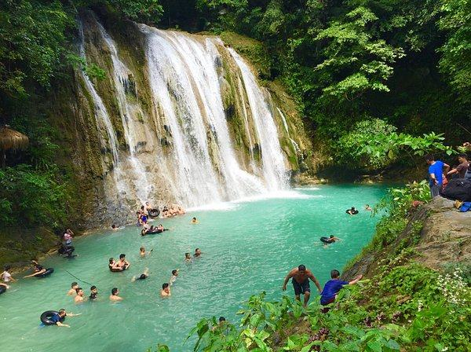
Swim or relax by natural pools at Daranak Falls, Batlag Falls, and the crystal-clear waters of Tinipak River
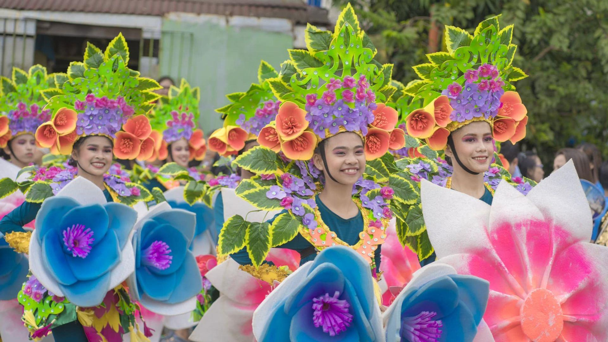
Celebrated annually (typically in November) to mark the town's founding, featuring art exhibits, cultural youth parades, local food bazaars
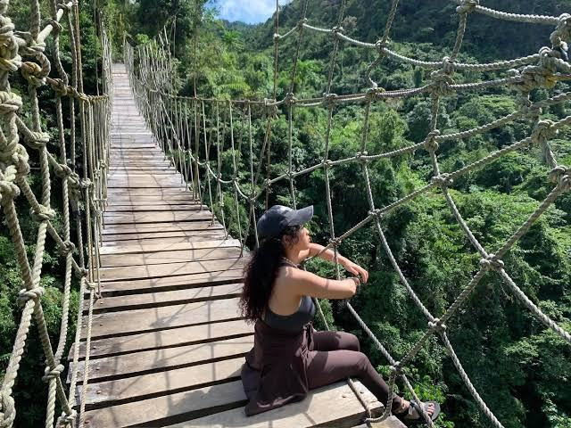
Crossing or viewing the bridges gives you a sweeping vantage point of the winding rivers
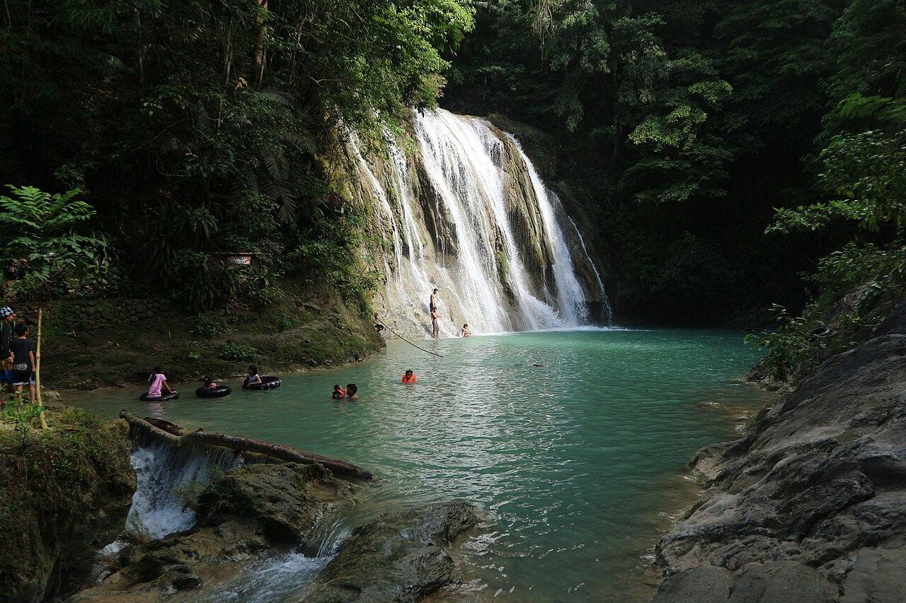
TOP DESTINATION
FALLS SAMPALOC, TANAY RIZAL
Daranak Falls is a waterfall located in the municipality of Tanay. It is one of the most popular tourist attractions in the province of Rizal, Philippines.
VIEW DESTINATIONLOCATION MAP · DARANAK FALLS
OPEN IN MAPS ↗THE EXPERIENCE
The festival highlights the town's eco-tourism, your trip naturally pairs with exploring Tanay's spectacular year-round natural assets. You can hit the festival in the town plaza during the day and easily take side-trips to go trail running, chase waterfalls at Daranak Falls, or camp out at the sea of clouds in the Sierra Madre mountain ridges.
Discover the wide, open skies that turn Tanay into a paradise at sunrise and sunset, where golden light spills over the peaks and paints the clouds in soft shades of pink, orange, and lavender.
TANAY: EXPLORE THE UNDISCOVERED
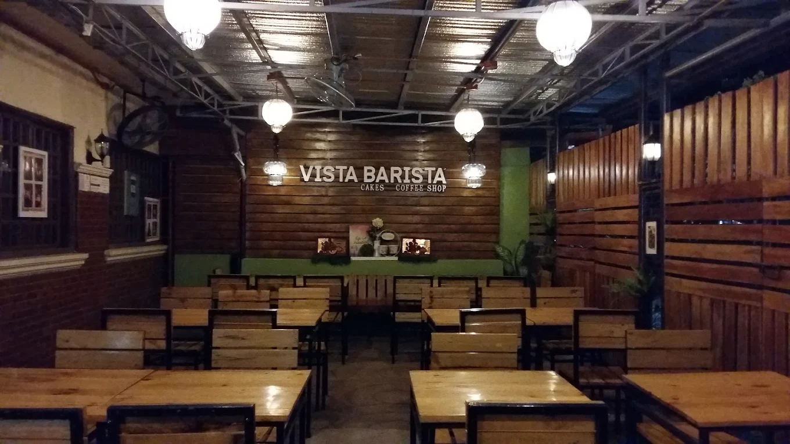
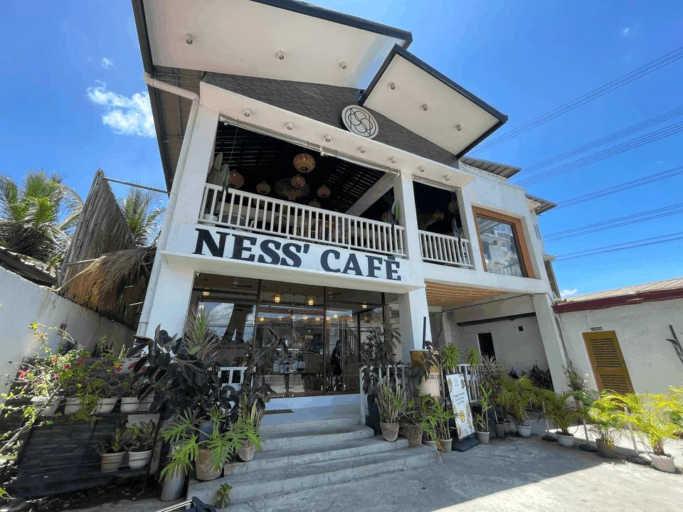
Brgy. Plaza Aldea Sampaloc Rd, Tanay Rizal
Cozy, neighborhood coffee spot located at Nesdy Compound
VIEW DETAILS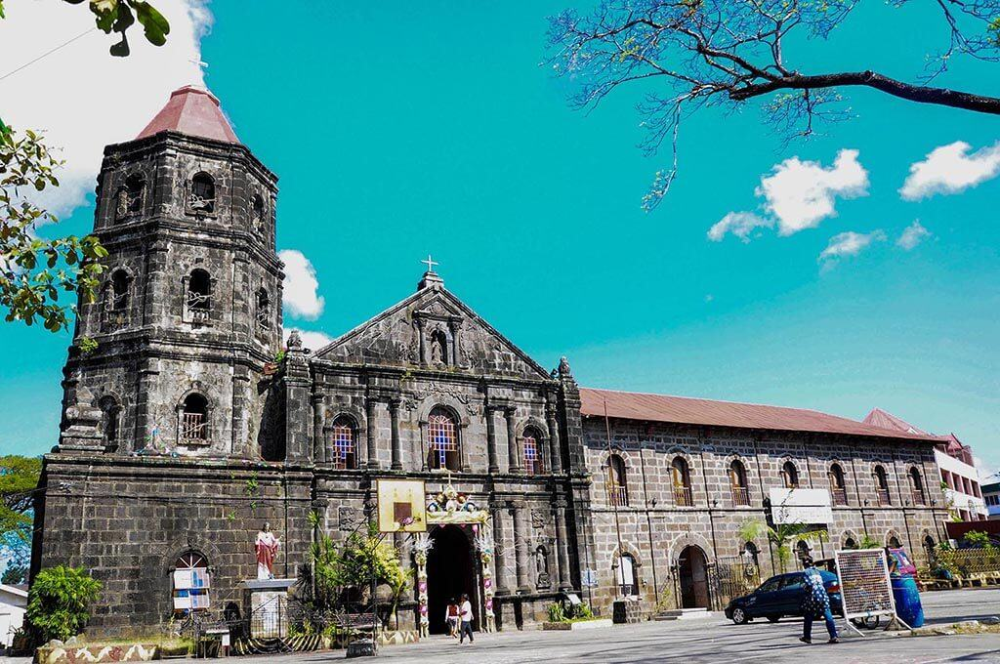
F7XM+9VW, M.H. Del Pilar St, Plaza Aldea, Tanay, 1980 Rizal
The first stone church of Tanay was built in 1680
VIEW DETAILS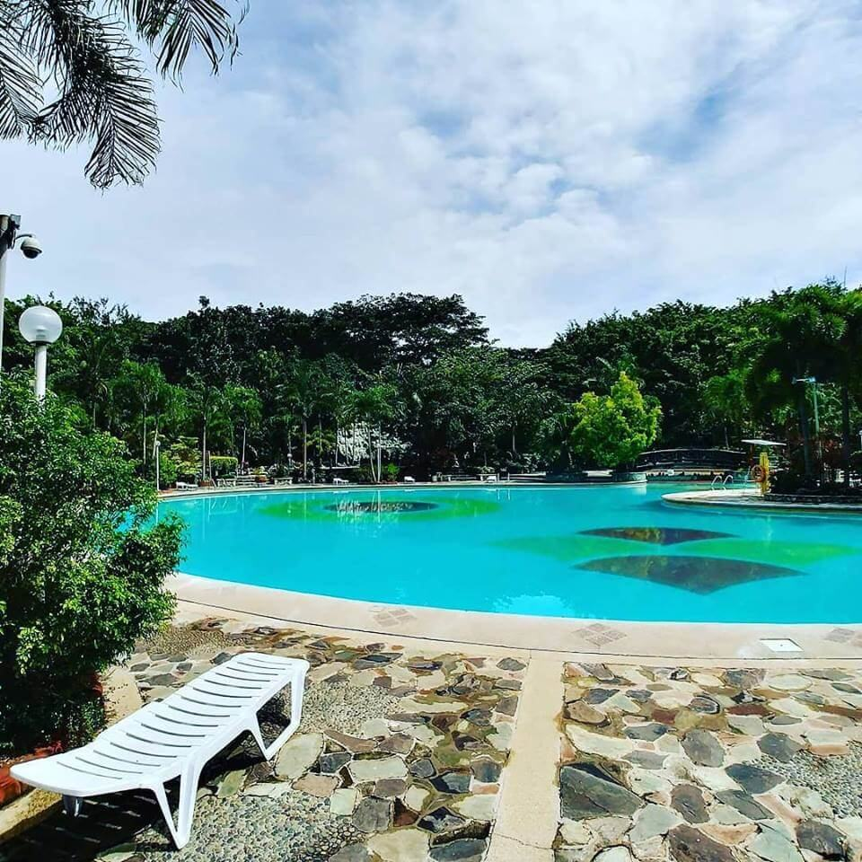
Sitio Bathala, Brgy. Plaza Aldea, Tanay-Sampaloc Road, Tanay, Rizal
Momarco Resort, designed to present its guests with relaxation and enjoyment
VIEW DETAILS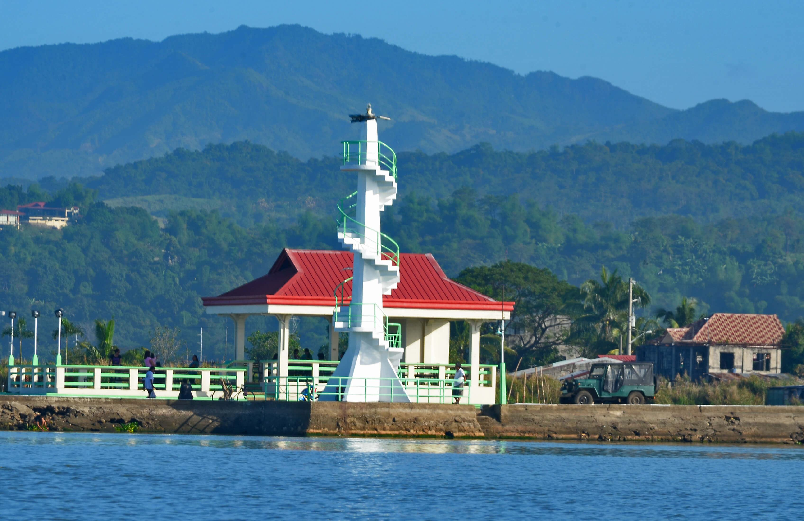
Barangay San Isidro, Tanay, Rizal,
Parola and its Lakeshore provides a grand view of the Lake and mountains
VIEW DETAILS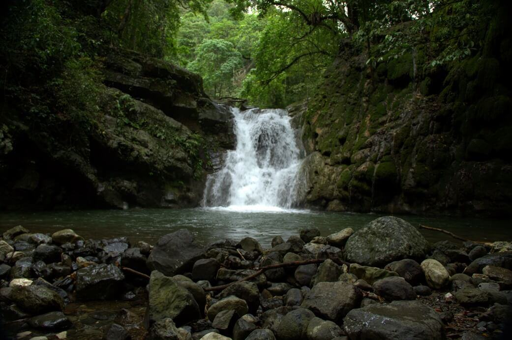
Barangay Sta. Ines Tanay, Rizal
ideal destination for mountaineers who are looking for perfect adventure to trek.
VIEW DETAILS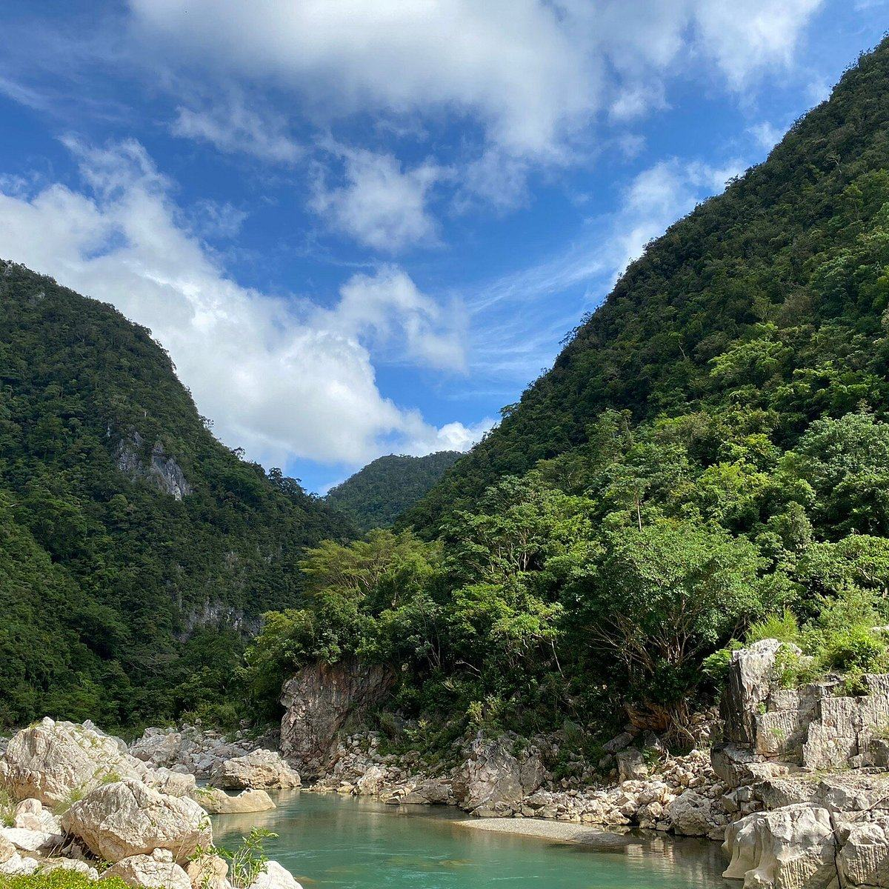
Barangay Daraitan, Tanay, Rizal
Awarded as one of the cleanest rivers in the Philippines
VIEW DETAILS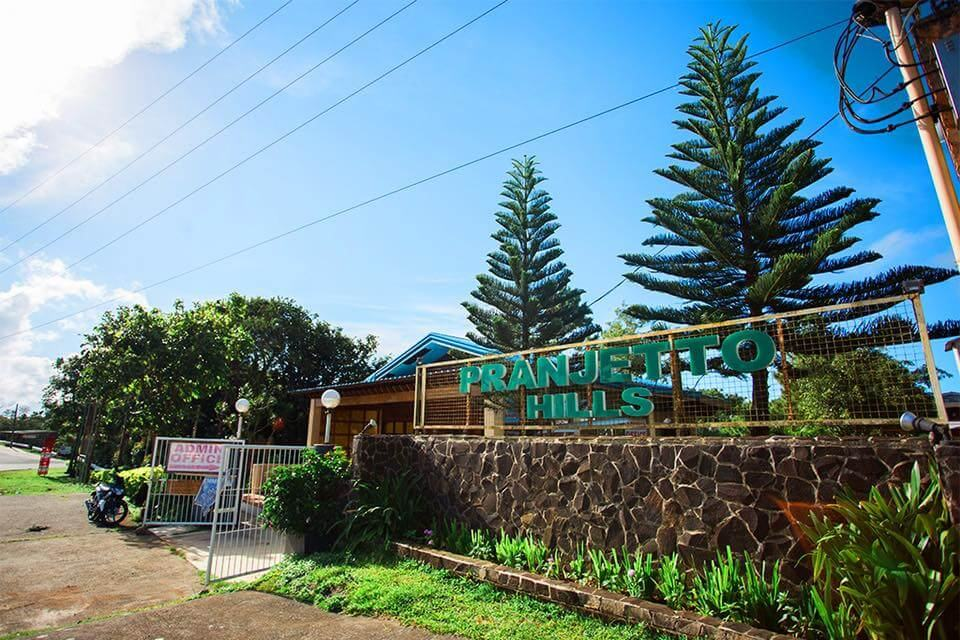
Sitio Mayagay, Barangay Sampaloc, Marikina-Infanta Hwy, Tanay, 1980 Rizal
a beautiful olympic-size swimming pool, detached air-conditioned cottages with room for the whole family
VIEW DETAILS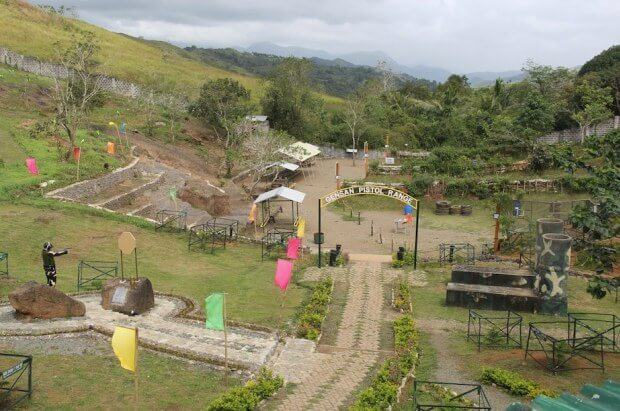
Barangay Sampaloc, Tanay, Rizal
Camp Mateo Capinpin is the Home of the Jungle Fighters, the 2nd Infantry Division of the Philippine Army.
VIEW DETAILS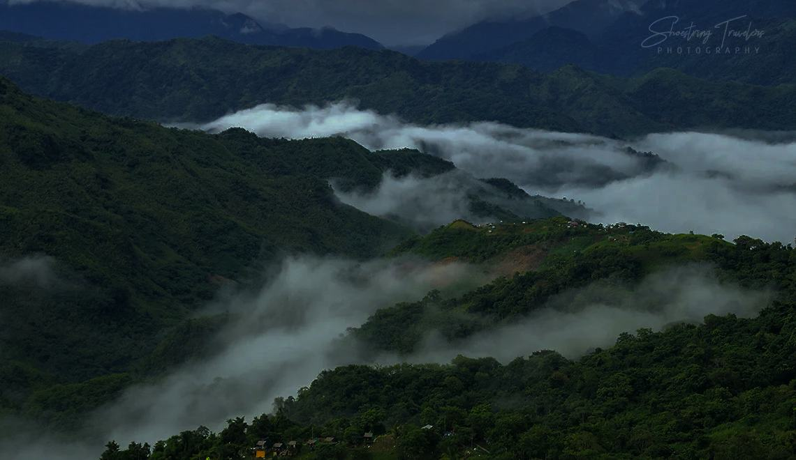
Sitio Maysawa, Tanay, Rizal
Simple quarters in a rustic guesthouse offering outdoor baths mountain views, & plus a fire pit.
VIEW DETAILS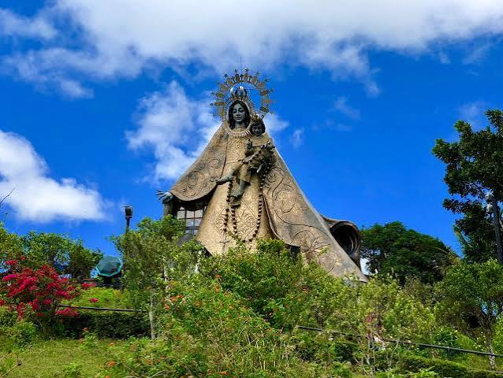
TOP DESTINATION · CULTURE
Sitio Aguho St, Barangay Sampaloc
“RICA is a 13.5 hectare sacred space on top of the Sierra Madre Mountain. It has the 71 feet Mama Mary Regina Rosarii, a big chapel that has 4 masses on Sundays, several restaurants, picnic areas, a Retreat Center and an ecological sanctuary."
VIEW DESTINATIONLOCATION MAP · REGINA RICA
OPEN IN MAPS ↗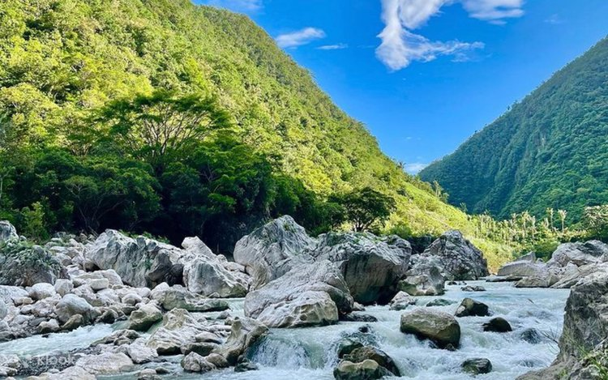
TOP DESTINATION · MOUNTAIN
Barangay daraitan
Mt. Daraitan is a great sampler for hiking up the relatively unexplored Sierra Madre mountains, and along with the other attractions in Daraitan
VIEW DESTINATIONLOCATION MAP · MT. DARAITAN
OPEN IN MAPS ↗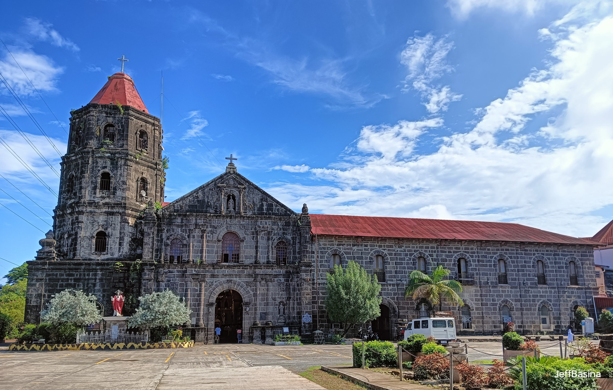
TOP DESTINATION · CHURCH
Barangay Plaza Aldea
San Ildefonso de Toledo Parish Church, commonly known as Tanay Church, is a Roman Catholic church located in the town of Tanay, Rizal in the Philippines.
VIEW DESTINATIONLOCATION MAP · SAN ILDEFONSO DE TOLEDO PARISH
OPEN IN MAPS ↗DESTINATION · RESTO
Manila E Rd, Tanay, 1980 Rizal
a cozy, vintage-vibe café and bakeshop
BACK TO DESTINATIONSLOCATION MAP · VISTA BARISTA
OPEN IN MAPS ↗DESTINATION · RESTO
Brgy. Plaza Aldea Sampaloc Rd, Tanay Rizal
Cozy, neighborhood coffee spot located at Nesdy Compound
BACK TO DESTINATIONSLOCATION MAP · NESS' CAFE
OPEN IN MAPS ↗DESTINATION · NATURE
Sitio Bathala, Brgy. Plaza Aldea, Tanay-Sampaloc Road, Tanay, Rizal
Momarco Resort, designed to present its guests with relaxation and enjoyment
BACK TO DESTINATIONSLOCATION MAP · MOMARCO FOREST COVE RESORT AND HOTEL
OPEN IN MAPS ↗DESTINATION · NATURE
Barangay San Isidro, Tanay, Rizal,
Parola and its Lakeshore provides a grand view of the Lake and mountains
BACK TO DESTINATIONSLOCATION MAP · PAROLA
OPEN IN MAPS ↗DESTINATION · FALLS
Barangay Sta. Ines Tanay, Rizal
ideal destination for mountaineers who are looking for perfect adventure to trek.
BACK TO DESTINATIONSLOCATION MAP · KINABUAN FALLS
OPEN IN MAPS ↗DESTINATION · NATURE
Barangay Daraitan, Tanay, Rizal
Awarded as one of the cleanest rivers in the Philippines
BACK TO DESTINATIONSLOCATION MAP · DARAITAN RIVER AND TINIPAK NA BATO
OPEN IN MAPS ↗DESTINATION · NATURE
Sitio Mayagay, Barangay Sampaloc, Marikina-Infanta Hwy, Tanay, 1980 Rizal
a beautiful olympic-size swimming pool, detached air-conditioned cottages with room for the whole family
BACK TO DESTINATIONSLOCATION MAP · PRANETTO HILLS
OPEN IN MAPS ↗DESTINATION · NATURE
Barangay Sampaloc, Tanay, Rizal
Camp Mateo Capinpin is the Home of the Jungle Fighters, the 2nd Infantry Division of the Philippine Army.
BACK TO DESTINATIONSLOCATION MAP · CAMP CAPINPIN
OPEN IN MAPS ↗DESTINATION · NATURE
Sitio Maysawa, Tanay, Rizal
Simple quarters in a rustic guesthouse offering outdoor baths mountain views, & plus a fire pit.
BACK TO DESTINATIONSLOCATION MAP · EL PATIO RAZON
OPEN IN MAPS ↗